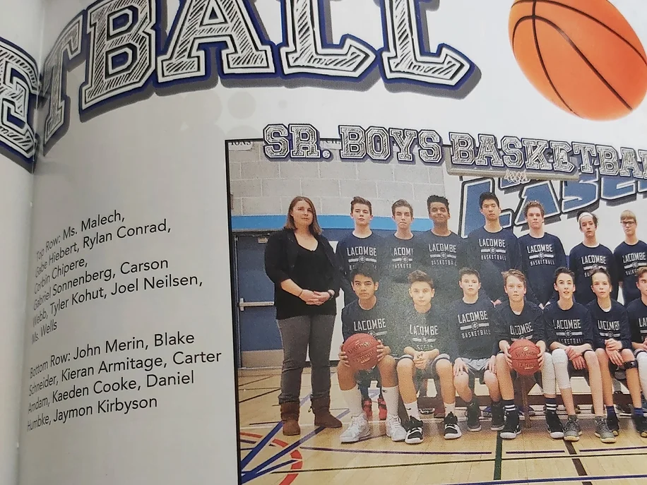

Project Work
One of my proudest moments in my life was being part of Ecole Lacombe Junior High Schools Sr. Basketball Team. One that I cherish till this day due to the cooperation and skills I have attained from my teammates, coaches and everyone who supported my journey. This team gave me responsibilities as a leader, being a point guard, making sure that everyone in the team benefits and has fun doing so. Gave me the ability to think outside the box, think creatively and make smart reads. Instead of flashy showboating playstyle, I have learned to be fundamental and have fun enjoying the abilitity to facillate and have everyone involved. Overall, in connection to who I am now, I have gained the ability to construct and build a team that everyone can benefit upon, understand abilities of how to incorporate the idea of fun with hard work, and take my time just enjoying what I have now.
